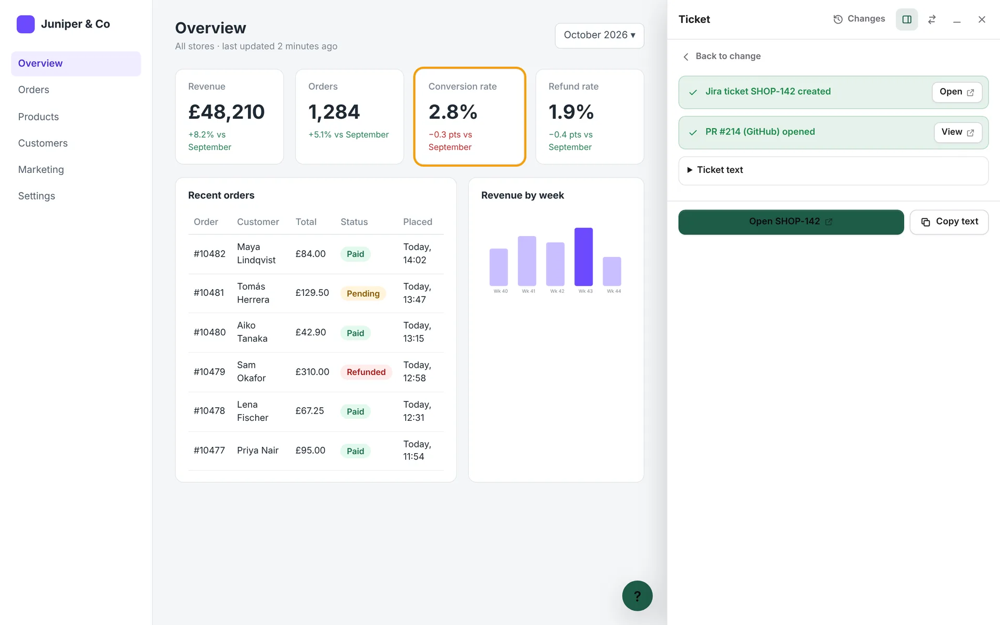

From a question to a pull request
The whole path happens on the page people are already looking at. Nobody has to find the file first.
-
Ask how it's calculated
Alfred's agent reads the controllers, components, scopes and queries behind the value, then answers in plain words. Ask follow-ups right underneath, like “does this include refunded orders?”
- The first answer takes 10 to 40 seconds, then it's saved and instant for everyone.
- Your team can verify answers, so people see “Verified” instead of “AI-generated”.

-
Describe a change
Say what you want in your own words: “make this a green badge when it's above 2.5%”. Alfred finds the code and proposes the smallest edit that does it, shown as a diff. Nothing is written yet.

-
Preview it on the real page
See the change rendered with your real data. Only you see it, and the code isn't touched. The preview bar lets you open a ticket or a pull request, refine the change, or stop.

-
Send it as a ticket and a pull request
One form creates the ticket in your tracker and opens a draft pull request with the code, linked both ways. The ticket carries the request, the diff, screenshots and where it lives in the code.
- Trackers: Jira, GitHub Issues, GitLab, Linear, Trello, ClickUp, Asana or your own.
- Pull requests: GitHub, GitLab or Bitbucket, through their APIs. No git on the server.

-
A developer reviews and merges
The ticket and the pull request are created together, so the developer gets the request, the context and the code in one place.
